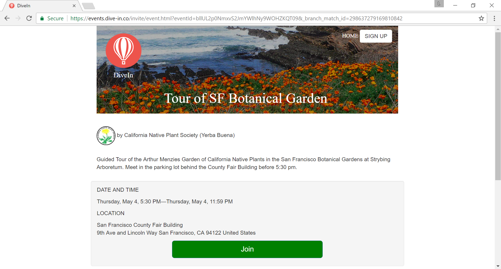
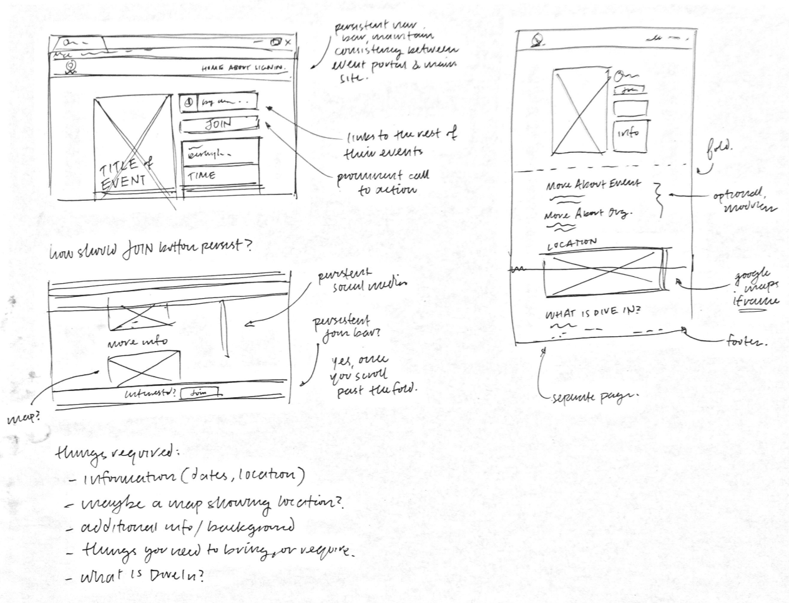
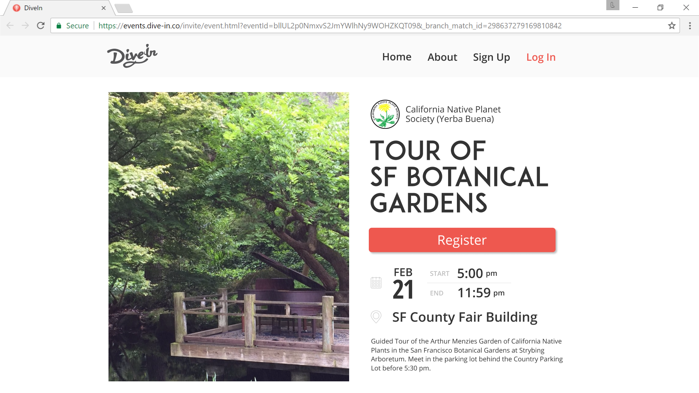
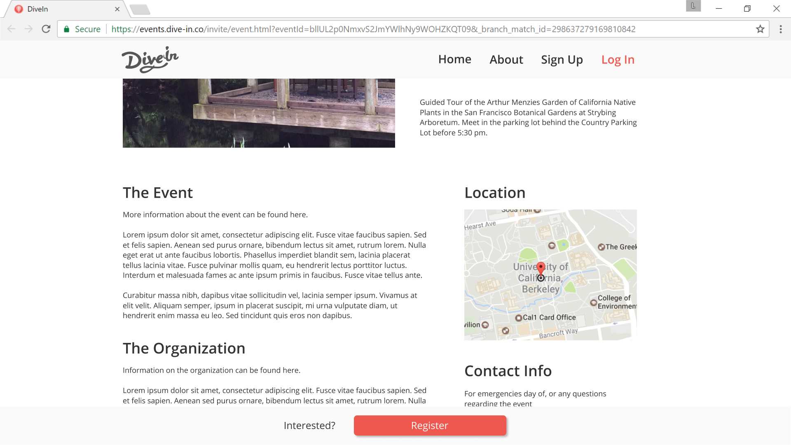
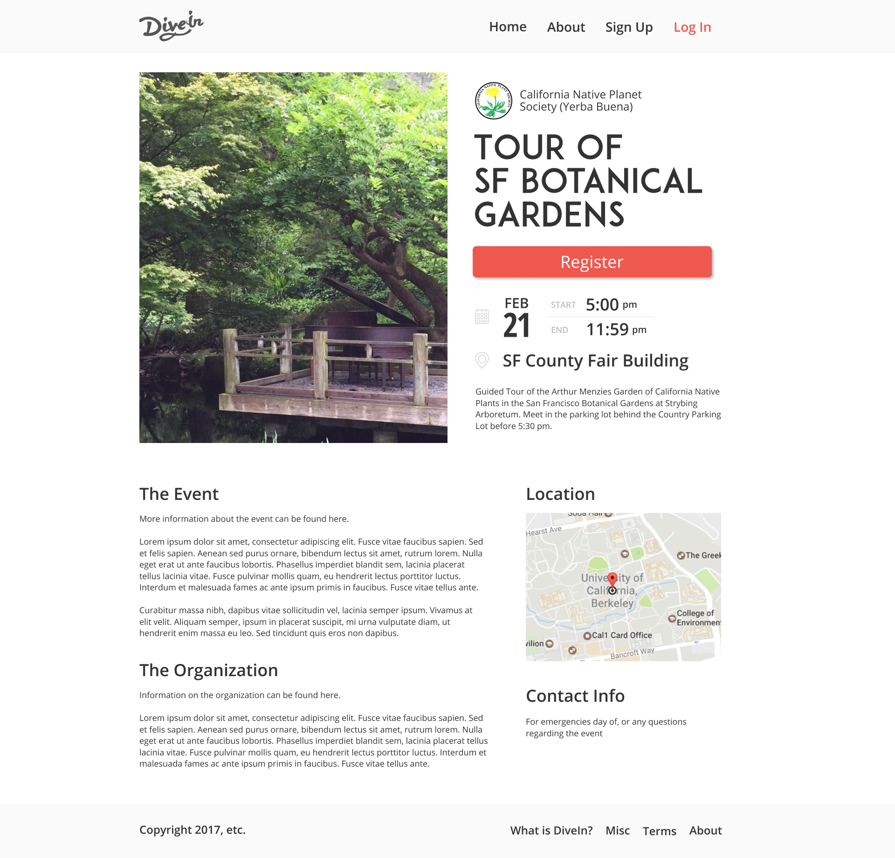

Dive In
An event page for community engagement.
Introduction
This was a short project that I completed for Dive In, a local start up focused on community organization. The goal was to recreate their event portal, where users could connect with and get involved in local volunteering efforts. I rethought the UI/UX of their portal, in order to better encourage user engagement and interaction; my solution made information and registraton more easily accessible.

Due to the speedy nature of the project, my process was truncated; I rapidly idenified current pain points, created wireframes, and went straight to a mid-fi prototype.
Points of Improvement

The original event page was very barebones; nothing egregious, but certainly nothing to write home about. The points that I found most troubling were:
- A lack of structure; the content simply stacked from the top down, providing no obvious entry points for the user.
- Little consistency with regards to font usage, which increased visual clutter and user confusion.
- The static presentation of information, with no room to expand should more information be required.
I began by drawing a set of wireframes, aimed at revamping the page:

This project wasn't meant to be anything intensive, so from there, I decided to jump straight to creating a mid-fi prototype using Figma.
I decided to maintain the same color scheme and most of the same information as the original event portal, instead focuseing primarily on the placement and layout of information. In particular, I emphasized the "Register" button and provided a clear call to action throughout the page. I also expanded the page to include more detailed information underneath the fold, while keeping the main points clear and accessible above the fold. Notice how a register button persists on the bottom of the page after scrolling down; this is meant to provide an always accessible entry point.
 
I also created a complementary style guide —

And altogether as one screen —
